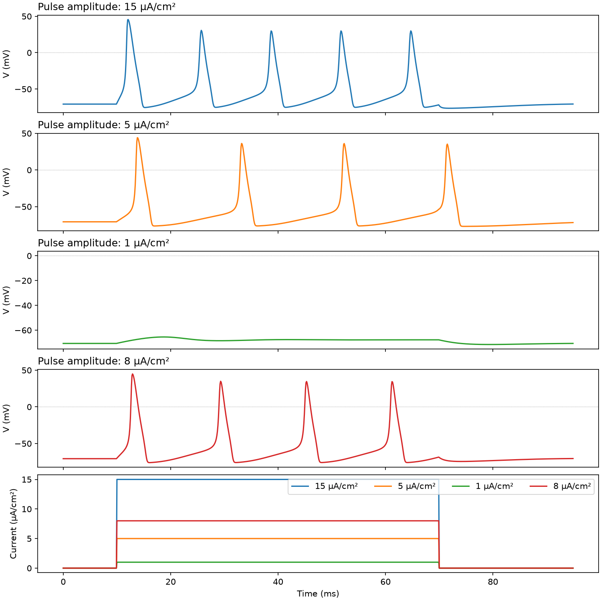
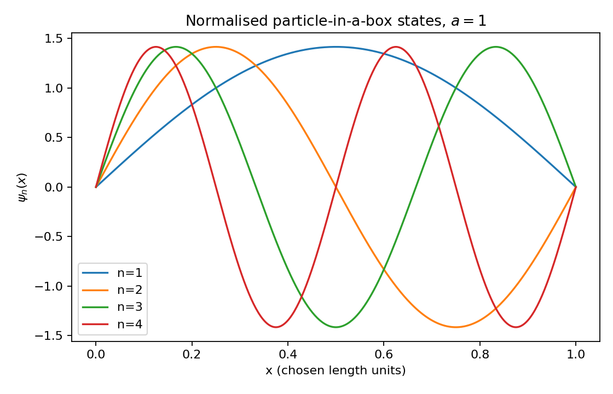

Neural modelling
Continuous attractor networks
Moving stimuli, persistent activity, and spatial representations in 1D rings and 2D periodic sheets.
BrainPy · CANNsView project
Cambridge · Clare College
I'm Judy, a Natural Sciences undergraduate interested in how mathematics and computation help us understand the brain and the physical world.
Computational neuroscience · Machine learning · Chemistry
Code, experiments & exploration
From individual neurons to molecular vibrations.
Notebooks, visualisations, and reproducible calculations.
7 projects shown
Neural modelling
Moving stimuli, persistent activity, and spatial representations in 1D rings and 2D periodic sheets.

Machine learning
Storing image patterns in a Hopfield network, recalling corrupted inputs, and exploring a targeted negative Hebbian update.

Chemistry
Exploring molecular vibration through wave functions, probability distributions, and a model of vibration–rotation coupling.

Neural modelling
Simulating membrane voltage and ion-channel gating as four independent neurons respond to different current pulses.

Neural modelling
Comparing leaky integrate-and-fire, AdEx, and Izhikevich models through voltage traces and phase-plane analysis.

Chemistry
Analysing electrochemistry measurements and exploring normalisation and orthogonality of particle-in-a-box states.

Mathematics
Constructing a periodic curve through seven synthetic points using Fourier basis functions and a linear system.
These projects grew out of scientific-computing coursework and neural-computation workshops. Individual repositories document teaching material, reference implementations, preparation changes, and the scope of their results.
A little about me
I study Natural Sciences at the University of Cambridge, bringing together mathematics, chemistry, and an interest in neural computation.
My experience spans computational modelling and time in neuroscience laboratories at UCL and Peking University. I enjoy translating scientific questions into code, exploring the results, and making the reasoning visible.
Beyond the lab, I'm a Natural Sciences subject representative at Clare College and captain of the women's football team. I also enjoy fencing, painting, and piano.
Learning by doing
Second-year undergraduate studying mathematics, computational mathematics, and chemistry. First-year result: 2:1 overall, with a first in Mathematics.
Explored neuronal dynamics, synaptic responses, excitation and inhibition networks, and Hebbian learning through computational coursework.
Taught science, mathematics, English, and physical education, and led extracurricular coding clubs.
Shadowed research into microglial distribution, immune response, and Alzheimer's disease. Gained experience in brain tissue preparation, staining, and confocal microscopy.
Developed mathematics materials for Year 6 pupils and helped plan and coordinate outreach events.
Shadowed work on gap junctions and neuronal synchronisation in the suprachiasmatic nucleus, with experience in patch clamp, tissue preparation, and fluorescent tagging.
Let's connect